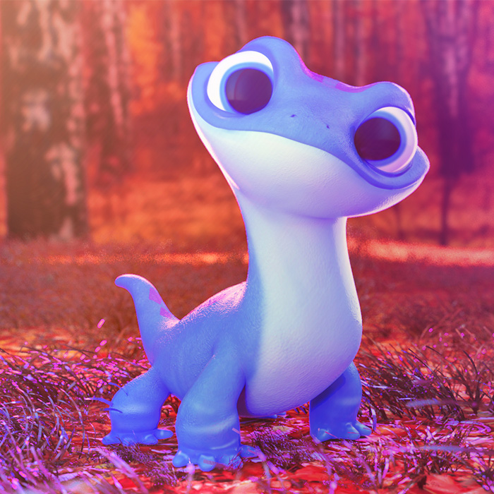
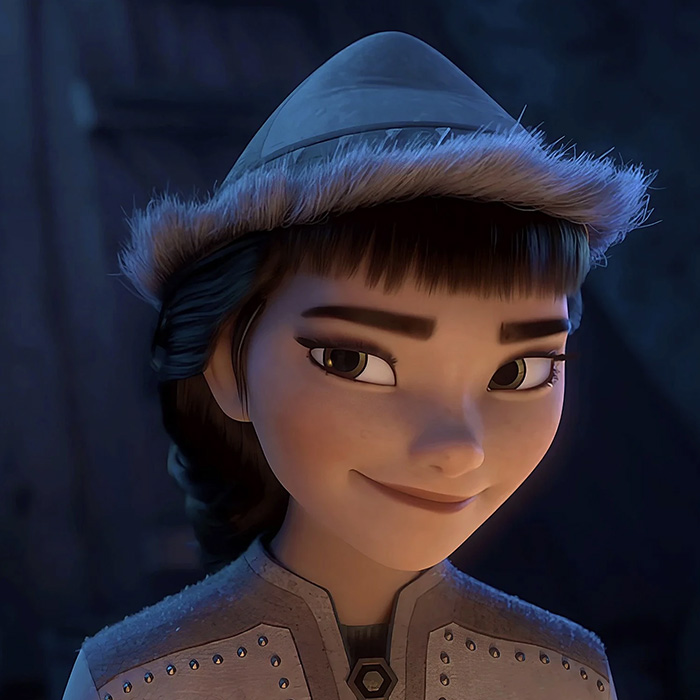
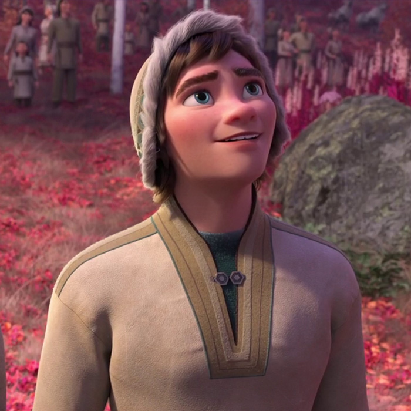
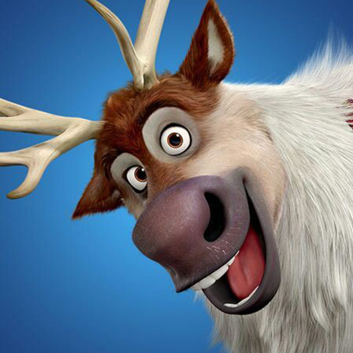
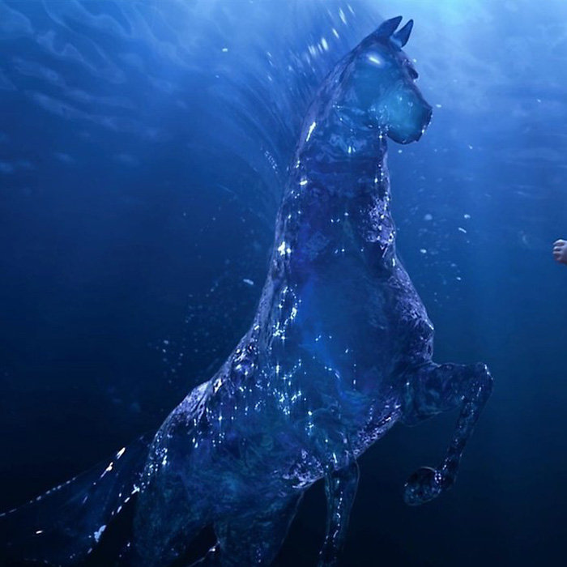
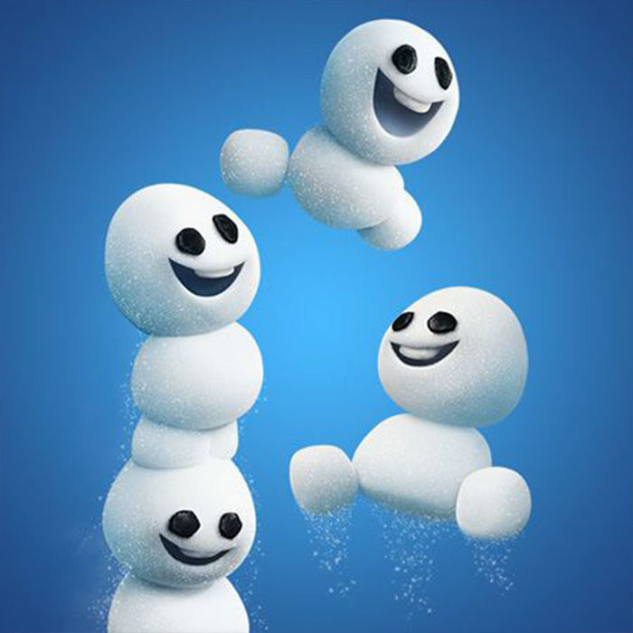
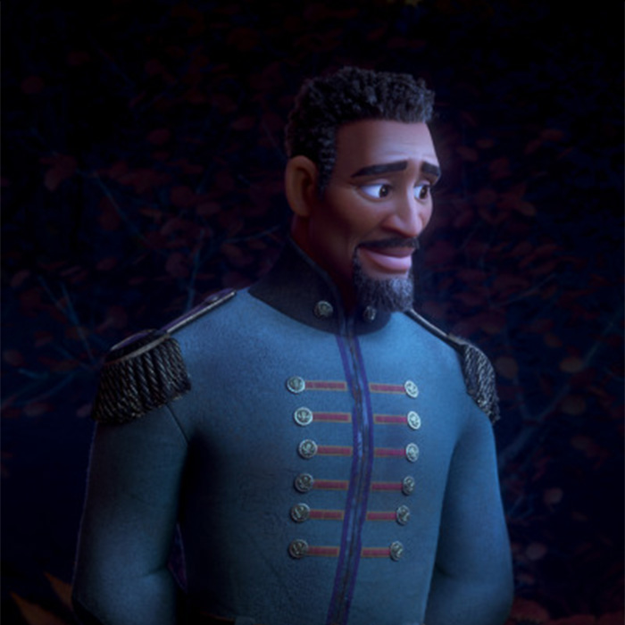
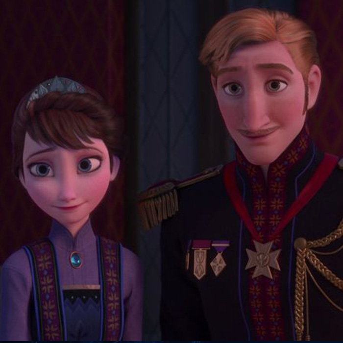

CONTENT
ANNA
Anna is the perfect fairytale character; unflappable, she is the forever optimist. Anna is fine as long as she has her family, Arendelle is safe, and she never has to be alone again. If Elsa, the older sister, is an unusual character that did not...
ELSA
Elsa is the perfect mythic character - magical and larger than life. Grateful her kingdom now accepts her, she works hard to be a good queen. But deep down she can’t help but wonder why she was born with powers.
KRISTOFF
A rugged mountain man and ice harvester by trade, Kristoff was a bit of a loner with his reindeer pal, Sven, until he met Anna. As Arendelle’s official Ice Master and Deliverer, Kristoff has found love with Anna and his new family: Elsa, Olaf and Sven.
OLAF
Created from Elsa’s magical powers, Olaf is by far the friendliest snowman in Arendelle. He is innocent, outgoing and loves all things summer. Olaf may be a bit naive, but his sincerity and good-natured temperament make him a true friend to Anna and Elsa.
etc_character
-

- bruni
- A salamander of innocuous appearance, Bruni is an inhabitant of the Enchanted Forest and the elemental spirit of fire. Though shy at first,
-

- honeymeren
- Honeymaren and her brother, Ryder Nattura, were born in the Enchanted Forest after the events of the Northuldran and Arendellian war. Due to the curse that prevented anyone from entering or leaving the forest, Honeymaren had never been outside of the forest. She would be raised as a reindeer shepherdess. With a staff on her person at most times, Honeymaren also served as a protector of her people, fending off threats like Lieutenant Mattias and his guards.
-

- ryder
- Ryder and his sister, Honeymaren, were born in the Enchanted Forest after the war between the Northuldra and Arendellians. Because of the curse that prevented anyone from leaving or entering the forest, Ryder had never been outside the mist that surrounds their home.
-

- sven
- Sven was orphaned as a calf and nearly died before being rescued by Kristoff. The two remained by each other's side ever since as best friends. As adults, Sven works alongside Kristoff in harvesting and selling ice throughout Arendelle. Sven's role in the operation is typically that of a sled-puller with Kristoff in command.
-

- water_fairy
- Spirit of water. It has the appearance of a transparent horse. If you look at this, it seems that the hippocampus of Kelpina and Poseidon was also referred to. Since it is a water spirit, it does not have a separate form, so it can regenerate quickly even if its body freezes. But you can only run where there is water. In the second half, Elsa freezes Knock's body, allowing him to run without water.
-

- snowgies
- The Snowgies (also known as Snow-Babies) are tiny, mischievous snowmen that were created by Elsa, who first appeared in the animated short, Frozen Fever.
-

- mattias
- Destin Mattias was raised in Arendelle by his father, whom Destin remembers fondly as a great man that taught him to never take the good for granted in life. Eventually, Destin made his way into the royal family as the official guard of Prince Agnarr, during the reign of King Runeard. He was one of the most respected members of the guard, with a portrait hanging within the library of Arendelle Castle, second on the left of Runeard. Socially, he seemed to be romantically involved with a woman named Halima.
-

- iduna & agnar
- Prince Agnarr was born as the only child and heir to King Runeard and Queen Rita of Arendelle. When Agnarr was five years old,[2] Rita went to the Valley of the Living Rock and begged Pabbie, the leader of the trolls that inhabited said valley, to remove her memories of her life in Arendelle